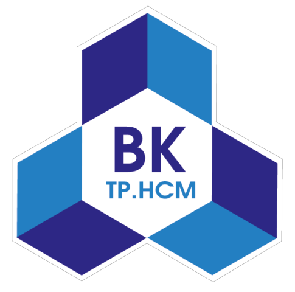

ĐẠI HỌC QUỐC GIA THÀNH PHỐ HỒ CHÍ MINH
TRƯỜNG ĐẠI HỌC BÁCH KHOA

BÀI TỰ HỌC BLENDED LEARNING
CHƯƠNG 1:
Câu 1: Khái quát những điểm bổ sung cơ bản về mặt lý luận của V.I.Lênin
đối với chủ nghĩa Mác nói chung và chủ nghĩa xã hội khoa học nói riêng
trong điều kiện mới.
Sau Cách mạng Tháng Mười Nga thắng lợi, V.I.Lênin đã viết nhiều tác phẩm
quan trọng bàn về những nguyên lý của chủ nghĩa xã hội khoa học trong thời
kỳ mới, tiêu biểu là những luận điểm:
-
Về chuyên chính vô sản: Theo V.I.Lênin, đây là một hình thức nhà nước
mới - nhà nước dân chủ (dân chủ đối với những người vô sản và nói chung
những người không có của) và chuyên chính đối với giai cấp tư sản. Cơ sở
và nguyên tắc cao nhất của chuyên chính vô sản là sự liên minh của giai
cấp công nhân với giai cấp nông dân và toàn thể nhân dân lao động, dưới
sự lãnh đạo của giai cấp công nhân, để xây dựng chủ nghĩa xã hội.
-
Về thời kỳ quá độ chính trị: V.I.Lênin chỉ rõ: chuyên chính vô sản không
phải chỉ là bạo lực đối với bọn bóc lột và cũng không phải chủ yếu là
bạo lực, mà là việc giai cấp công nhân đưa ra và thực hiện được kiểu tổ
chức lao động xã hội cao hơn so với chủ nghĩa tư bản. Người nêu rõ:
“chuyên chính vô sản là một cuộc đấu tranh kiên trì, đổ máu và không
đổ máu, bạo lực và hòa bình, bằng quân sự và bằng kinh tế, bằng giáo
dục và bằng hành chính, chống những thế lực và những tập tục của xã
hội cũ”.
-
Về chế độ dân chủ: V.I.Lênin khẳng định: chỉ có dân chủ tư sản hoặc dân
chủ vô sản (dân chủ xã hội chủ nghĩa), không có dân chủ thuần tuý hay
dân chủ nói chung. Chế độ dân chủ vô sản dân chủ hơn gấp triệu lần so
với bất cứ chế độ dân chủ tư sản nào.
-
Về cải cách hành chính bộ máy nhà nước: V.I.Lênin cho rằng phải có một
đội ngũ những người cộng sản cách mạng đã được tôi luyện và phải có bộ
máy nhà nước tinh, gọn, không hành chính, quan liêu.
-
Về Cương lĩnh xây dựng chủ nghĩa xã hội ở nước Nga: V.I.Lênin nêu ra
nhiều luận điểm khoa học độc đáo như: cần có những bước quá độ nhỏ trong
thời kỳ quá độ nói chung; giữ vững chính quyền Xôviết để thực hiện điện
khí hóa toàn quốc; xã hội hóa những tư liệu sản xuất cơ bản; xây dựng
nền công nghiệp hiện đại; cải tạo kinh tế tiểu nông; thực hiện cách mạng
văn hóa; sử dụng rộng rãi hình thức chủ nghĩa tư bản nhà nước; cải tạo
nông nghiệp bằng con đường hợp tác xã; học chủ nghĩa tư bản về kỹ thuật,
kinh nghiệm quản lý kinh tế.
-
Về kinh tế hàng hóa: V.I.Lênin đặc biệt nhấn mạnh: Trong thời kỳ quá độ
lên chủ nghĩa xã hội, cần thiết phải phát triển kinh tế hàng hóa nhiều
thành phần.
Câu 2: Liên hệ những đóng góp của Đảng Cộng sản Việt vào kho tàng lý luận
của chủ nghĩa Mác - Lênin nói chung, chủ nghĩa xã hội khoa học nói riêng ở
Việt Nam.
Sau 35 năm đổi mới, Đảng Cộng sản Việt Nam đã có những đóng góp to lớn vào
kho tàng lý luận của chủ nghĩa Mác - Lênin nói chung, chủ nghĩa xã hội
khoa học nói riêng, đó là:
-
Độc lập dân tộc gắn liền với chủ nghĩa xã hội là quy luật của cách mạng
Việt Nam.
-
Kết hợp chặt chẽ đổi mới kinh tế với đổi mới chính trị, lấy đổi mới kinh
tế làm trung tâm, đồng thời đổi mới từng bước về chính trị, đảm bảo giữ
vững ổn định chính trị. Gắn phát triển kinh tế là nhiệm vụ trung tâm,
xây dựng Đảng là khâu then chốt với phát triển văn hóa là nền tảng tinh
thần của xã hội.
-
Xây dựng và phát triển nền kinh tế thị trường định hướng xã hội chủ
nghĩa, tăng cường vai trò kiến tạo, quản lý của Nhà nước. Giải quyết
đúng đắn quan hệ giữa tăng trưởng kinh tế với bảo đảm tiến bộ và công
bằng xã hội. Phát triển kinh tế phải đi đôi với giữ gìn bản sắc văn hóa
dân tộc và bảo vệ môi trường.
-
Phát huy dân chủ, xây dựng Nhà nước pháp quyền Việt Nam xã hội chủ
nghĩa, đổi mới hệ thống chính trị, bảo đảm toàn bộ quyền lực thuộc về
nhân dân.
-
Mở rộng và phát huy khối đại đoàn kết toàn dân tộc, phát huy sức mạnh
của mọi giai cấp, tầng lớp, thành phần dân tộc, tôn giáo, mọi công dân
Việt Nam ở trong và ngoài nước, tạo động lực cho công cuộc đổi mới, xây
dựng và bảo vệ Tổ quốc.
-
Mở rộng quan hệ đối ngoại, thực hiện hội nhập quốc tế; tranh thủ sự ủng
hộ của nhân dân thế giới, kết hợp sức mạnh dân tộc với sức mạnh thời
đại.
-
Giữ vững và tăng cường vai trò lãnh đạo của Đảng Cộng sản Việt Nam -
nhân tố quan trọng hàng đầu bảo đảm thắng lợi của sự nghiệp đổi mới, hội
nhập và phát triển.
CHƯƠNG 6
Câu 1. Tại sao ở cấp độ gia đình của người Việt Nam hiện nay, thờ cúng tổ
tiên là hoạt động phổ biến, thậm chí trở thành truyền thống, nét đẹp văn
hóa của mỗi gia đình, dòng họ?
Ở cấp độ gia đình, thờ cúng tổ tiên là hoạt động phổ biến, trở thành
truyền thống, nét đẹp văn hóa vì tín ngưỡng này
“là sợi dây kết dính các thành viên trong dòng họ, dòng tộc, kể cả họ
có thể sinh sống ở mọi miền của đất nước”.
Câu 2. Làm rõ các hiện tượng tôn giáo mới có xu hướng phát triển mạnh tác
động đến đời sống cộng đồng và khối đại đoàn kết toàn dân tộc.
Từ khi đổi mới, một số hiện tượng tôn giáo mới xuất hiện như Long Hoa Di
Lặc, Tin Lành Vàng Chứ, Thanh Hải vô thượng sư, Tiên Rồng và các tổ chức
đội lốt tôn giáo như Tin Lành Đềga, Hà Mòn ở Tây Nguyên.
Các hiện tượng này tác động đến đời sống cộng đồng và khối đại đoàn kết
dân tộc:
- Tính chất mê tín của các hiện tượng tôn giáo mới khá rõ.
-
Một số nhóm lợi dụng niềm tin tôn giáo để tuyên truyền nội dung gây
hoang mang trong quần chúng, thực hành nghi lễ phản văn hóa, truyền đạo
trái phép.
-
Phát tán các tài liệu có nội dung xuyên tạc đường lối, chính sách của
Đảng và Nhà nước.
-
Làm phương hại đến mối quan hệ dân tộc và tôn giáo, ảnh hưởng đến khối
đại đoàn kết dân tộc, đoàn kết tôn giáo.
-
Gây ra nhiều vấn đề phức tạp và tác động tiêu cực đến tình hình an ninh
chính trị, trật tự an toàn xã hội ở nhiều vùng dân tộc.
Contact me:
Email:
vinh.vo2313936@hcmut.edu.vn
Github:
https://github.com/Vinhvo282?tab=repositories
Zalo:
0327239002
Tải lại trang
Trở lại đầu trang